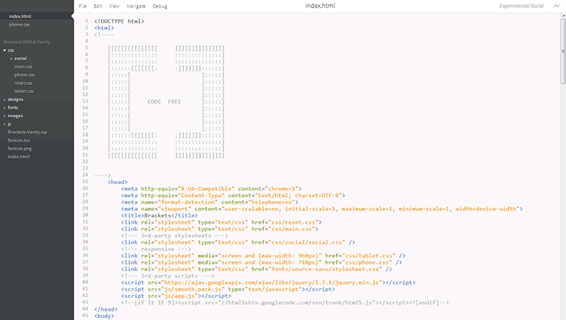

Brackets

Brackets is an open source
code editor for the web.

What makes Brackets special?
Optimized for web development.
Brackets cares about JS, HTML & CSS
A new approach
to coding.
Tools shouldn't get in your way
Brackets 's your browser.
Design and develop live in the browser
Built with
JS, HTML & CSS
MIT-licensed and hosted on GitHub!
Future
Cloud · Embedded · Device · ???
Help Wanted
Get Involved!
- Project: http://github.com/adobe/brackets
- Wiki: http://github.com/adobe/brackets/wiki
- Backlog: http://bit.ly/BracketsBacklog
- Group: http://groups.google.com/group/brackets-dev
- IRC: #brackets on Freenode
- Twitter: @Brackets
Thanks!